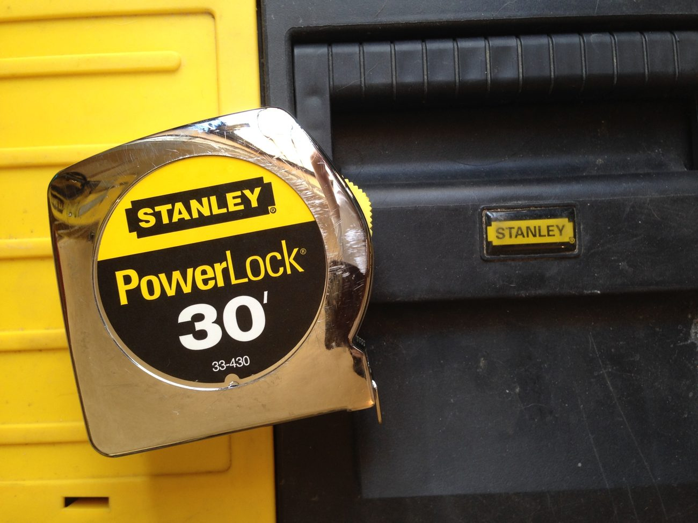

Cost the job before you quote it, then find out if you were right
Labor at a loaded rate, materials with waste, overhead as a percentage, the quote and your margin - then the same lines filled in with what the job really cost. With a free one-job cost sheet.
You quoted the job months ago. The cheque came in. Did you make money on it? Plenty of trade businesses can't say for sure, because the price was built from experience and the costs were never written down anywhere. A one-job cost sheet fixes both ends of that: you cost the job before you quote it, you record what actually happens, and you compare the two when the dust settles. One sheet, one job, no accounting software required.
"What I paid" is not what the job cost

Two costs hide inside every job, and both make quotes wrong in the same direction: too low.
Labor has to carry its loaded rate. The loaded rate is what an hour really costs you: the wage, plus payroll taxes, plus insurance, plus burden - the crew truck time, the paperwork, the time between jobs. If you're unsure, take-home wage times about 1.3 is a rough starting point - then replace it with your real figure once you have one - because an hour costed at the take-home wage alone is quietly underpriced. Materials go on the sheet as quantity times unit cost - but the quantity is what you'll buy, not what ends up in the building. The cut waste on trim. The bundle you order as a spare. The box of screws, the blades, the tubes of sealant, the dumpster. None of it feels worth pricing when you quote. Together, they're a common leak in an estimate.
What's a direct cost, and what's overhead

A direct cost exists because this job exists. Four buckets cover it:
- Labor - each task, its estimated hours, and the loaded rate per hour.
- Materials - each item, quantity, and unit cost.
- Subcontractors and other direct costs - your sub, the permit, the equipment rental, the disposal, the delivery or fuel run for this job.
- Overhead - everything that keeps the business alive but that no single job pays for.
That last bucket - the office, the phone, the insurance premiums, the tools and vehicle costs, the time you spend quoting - is real money, and it has to live inside your prices. The sheet handles it as a simple percentage of direct cost. Add up labor, materials and subs, then add a percentage of that total. Fifteen percent is a sensible default; use your own number if you know it.
The line between the two is easier to draw than people think. If the cost would stop when the job stops, it's direct. If it keeps running in a quiet month, it's overhead.
Profit is a decision, not a leftover
A one-job cost sheet with these blocks, the variance flag and the margin check: free, no signup.
Get the free sheet → The full Contractor Command Center, $79Add direct cost and overhead and you have total job cost - what the job costs you to do. Your quote is that number plus the margin you decide to charge. Decide it when you quote, and write it down. If profit is whatever happens to be left at the end, it's usually nothing, and you won't know why. On the sheet, this is just three lines: total job cost, quote price, and margin - the gap between them, in dollars and as a percentage of the quote.
The lines look different trade to trade, but the shape is the same. An electrician's labor tasks are rough-in, device install, panel and trim, testing; the materials are wire, conduit, devices, breakers, boxes. A plumber: rough-in, fixture set, pressure test; pipe, fittings, fixtures, valves. HVAC: equipment set, duct or line-set, startup and commissioning; equipment, refrigerant, duct, thermostat. Roofing: tear-off, underlayment, install, cleanup; shingles or membrane, underlayment, flashing, dumpster. A remodeler's sub lines read electric, plumbing, drywall, paint. Your version of the sheet should name your stages and your materials, because generic lines get skipped.
Recording what actually happens
The right time to log an actual cost is the day it happens. Hours per task at the end of the day, from the crew lead's text or your own notebook. Quantities as you use them. Receipts for the sub, the permit, the rental. Two weeks later, from memory, it will not happen.
Fill the same lines you estimated: actual hours against estimated hours, actual quantity against estimated quantity, actual amounts against estimated amounts. The sheet does the multiplying and adds each bucket up.
Reading the variance
Variance is actual total cost minus estimated total cost. Variance percent is that difference divided by the estimated total - how far off you were, relative to the size of the job.
The number to watch is ten percent. The sheet turns variance percent red above that. Red doesn't necessarily mean you lost money on the job - it means your estimating habit is wrong for that kind of work, and the next quote will be wrong the same way. The fix is to find which line drove it. Nine extra labor hours points at one problem. A rental nobody budgeted points at another. Variance tells you where to look; the line items tell you what to change.
The margin check
The last check is margin. Planned margin is quote minus estimated cost. Actual margin is quote minus actual cost. Compare the percentages - margin as a share of the quote. The job can still be profitable and still have underperformed what you planned when you signed it. That gap is the price of the estimating error, in dollars.
A worked example
All numbers in this example are invented for illustration - they are the example figures built into the free sheet, not a real job.
The job: a kitchen and two bathrooms remodel, quoted at $7,500, overhead set at 15%, loaded rates of $45 and $35 an hour.
| Line | Estimated | Actual |
| --- | ---: | ---: |
|---|---|---|
| Labor (hours x loaded rate) | $1,600.00 | $2,005.00 |
| Materials (quantity x unit cost) | $1,790.00 | $1,922.00 |
| Subcontractors and other direct costs | $950.00 | $1,120.00 |
| Direct cost | $4,340.00 | $5,047.00 |
| Overhead at 15% of direct cost | $651.00 | $757.05 |
| Total job cost | $4,991.00 | $5,804.05 |
| Quote price | $7,500.00 | $7,500.00 |
| Margin (quote minus total cost) | $2,509.00 | $1,695.95 |
| Margin % of quote | 33.5% | 22.6% |
What went wrong is readable line by line. Labor was estimated at 36 hours and took 45 - the main work ran from 24 hours to 30, prep from 6 to 8. Materials ran over on the main item (44 units against 40) and on consumables. And there's a $120 equipment rental in the actual column that never appeared in the estimate.
Variance is $813.05, which is 16.3% of the estimated total - past the ten percent mark, so it shows red. Margin fell from a planned $2,509, or 33.5% of the quote, to $1,695.95, or 22.6%. The job still made money. It made $813 less than the number the quote was built on, and most of that traces back to one line: labor hours.
Start with one job
One sheet per job, saved per job. Do it for the next ten and you'll know your real loaded rate, your real waste factor, and which job types your estimates can't be trusted on yet. To begin, you can download a one-job cost sheet, free, no signup
This guide was drafted with AI assistance for Gridwork Systems. Every figure in it was recalculated in the sheet it describes.
Invoices, expenses, clients, quotes and a 12-month cashflow forecast — linked in one workbook. One-time price, lifetime updates.
Buy the Command Center — $49 → Start with the free forecaster